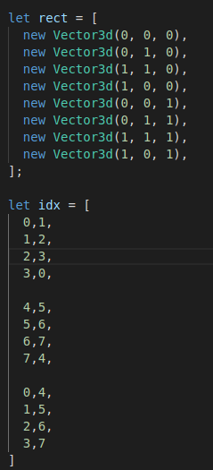
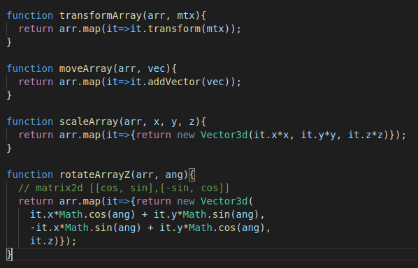
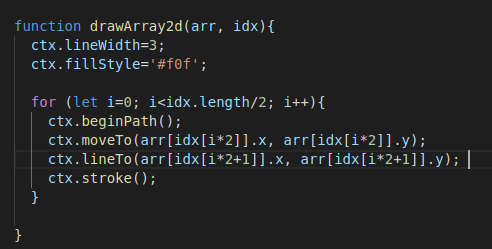
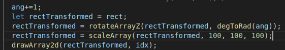
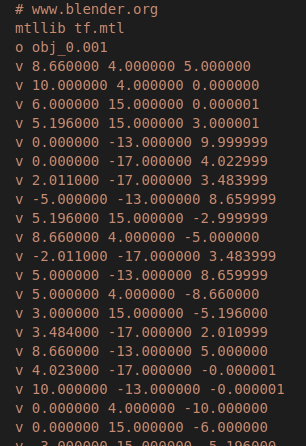
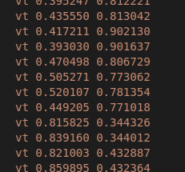
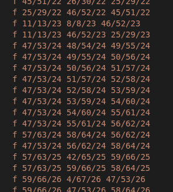

В данном случае задается куб из 8 вершин, Буфер индексов сформирован для отдельных линий из пар индексов так же webGL использует примитивы такие как VertexList LineList LineStrip, TriangleList, TriangleStrip, TriangleFan
так же задаем функцию для применения матричной трансформации. Подробнее она описана в соответствующем модуле. Обратим внимание на функцию поворота, как в ней расставлены коэффициенты cos sin -sin cos и сравним ее с матрицами поворотов.
Все должно быть просто, применение индексов означает выполнение цикла для именно индексов, по которым выбирается очередная вершина. Так же обратим внимание на то, что функция правильно работает только для LineList формата Другие форматы потребуеют читать буфер иначе.
Скорее даже не на сам шейдер, а на процесс создания матрицы, которая могла бы быть подана в шейдер в данном случае трансформации применяются к буфера сразу же. В этом основной недостаток - каждая трансформация должна быть выполнена для всего буфера. Матрицу же можно заранеее сформировать и один раз применить путем умножения для всех вершин буфера.
Проведем аналогию с ручным созданием массива вершин
Могут быть еще нормали, в данной модели они так же присутствуют, или другие пары UV координат для мультитекстуринга, цвет вершин и другие параметры
Это триангулированная модель, но бывают и полигональные варианты в obj формате. Как видно в obj формате записаны через слэш несколько индексов. Эти индексы соотсвествуют элементам листов V VT и VN соотвественно. При формировании буфера ГЛ потребуется сгруппировать эти параметры в 1 буфер, и его переиндексировать. Для упрощения в моей игрушке индексация вовсе не используется, буфер заполняется копированием вершин в буфер согласно заданным индексам.
